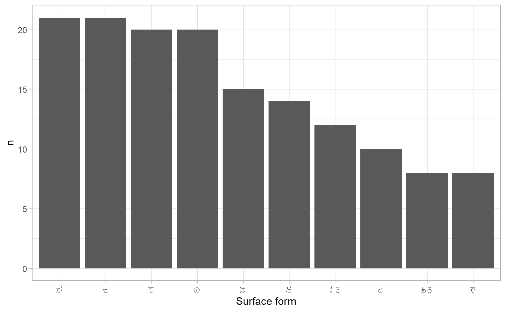
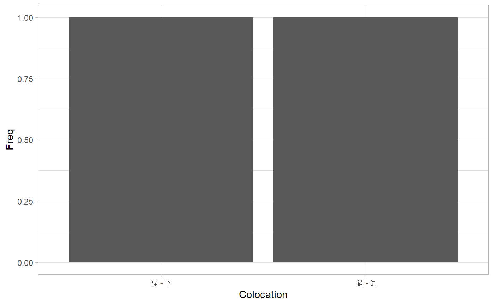
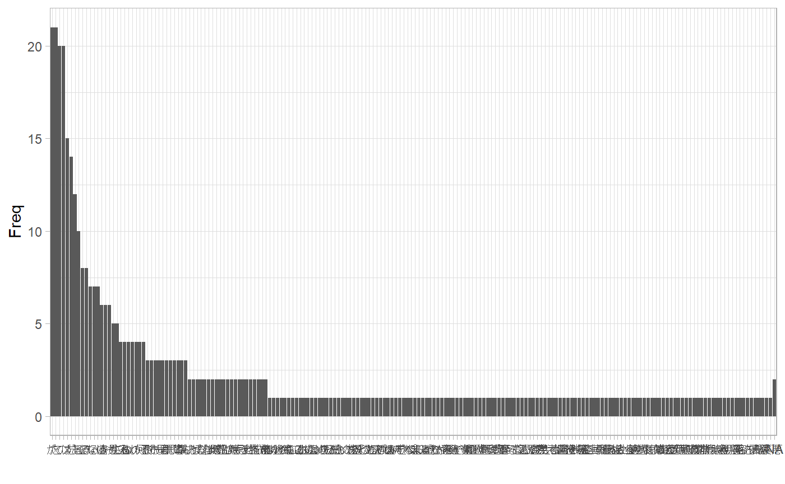
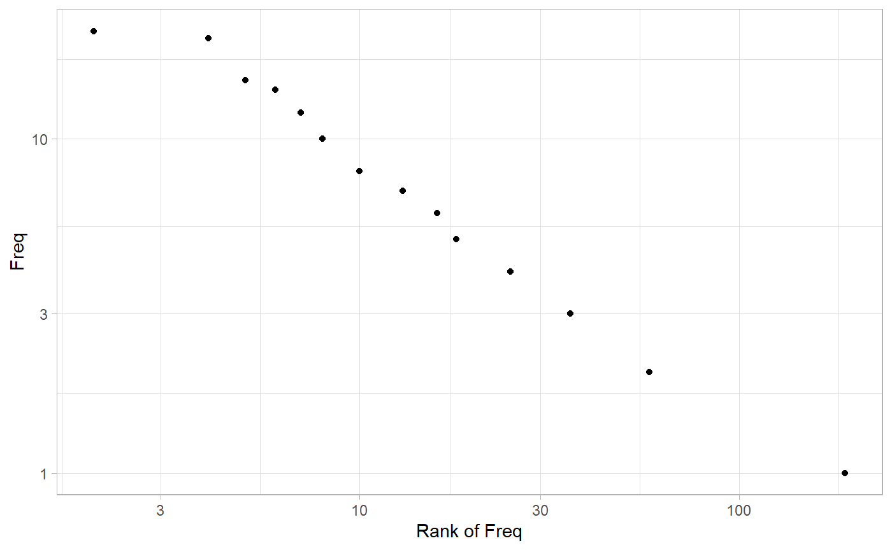

vignettes/03_100-knocks-2020.Rmd
03_100-knocks-2020.Rmd言語処理100本ノック 2020のうち、第4章: 形態素解析の回答例。
2015年版については以下の例がRで取り組んでいる。
2020年版ではPythonで解いている記事はすでにたくさんある。Rで部分的に取り組んでいる例もあるが、とくに8章のディープ・ニューラルネットのあたりから現状のRを取り巻く環境では取り組みにくい課題になるためか、完走している例はまだ見つけられない。
\n\nで与えられているが、rjavacmecab::cmecabはとくにvectorizedされていないため、文区切りにしたがって解析するにはタガーを9,210回呼ばなければならず、解析に時間を要してしまう。このため、ここでは文区切りを無視して一気に形態素解析する。neko_txt_mecab <- neko$text %>%
readr::read_lines(skip_empty_rows = TRUE) %>%
vctrs::vec_slice(1:30) %>%
rjavacmecab::normalize() %>%
rjavacmecab::cmecab() %>%
rjavacmecab::prettify()
colnames(neko_txt_mecab) <- c(
"Surface",
"POS1",
"POS2",
"POS3",
"POS4",
"X5StageUse1",
"X5StageUse2",
"Lemma",
"Reading",
"Pronunciation"
)
head(neko_txt_mecab)
#> Surface POS1 POS2 POS3 POS4 X5StageUse1 X5StageUse2 Lemma Reading
#> 1 一 名詞 数 <NA> <NA> <NA> <NA> 一 イチ
#> 2 吾輩 名詞 代名詞 一般 <NA> <NA> <NA> 吾輩 ワガハイ
#> 3 は 助詞 係助詞 <NA> <NA> <NA> <NA> は ハ
#> 4 猫 名詞 一般 <NA> <NA> <NA> <NA> 猫 ネコ
#> 5 で 助動詞 <NA> <NA> <NA> 特殊・ダ 連用形 だ デ
#> 6 ある 助動詞 <NA> <NA> <NA> 五段・ラ行アル 基本形 ある アル
#> Pronunciation
#> 1 イチ
#> 2 ワガハイ
#> 3 ワ
#> 4 ネコ
#> 5 デ
#> 6 アルneko_txt_mecab %>%
dplyr::filter(POS1 == "動詞") %>%
dplyr::select(Surface) %>%
head()
#> Surface
#> 1 生れ
#> 2 つか
#> 3 し
#> 4 泣い
#> 5 し
#> 6 いるneko_txt_mecab %>%
dplyr::filter(POS1 == "動詞") %>%
dplyr::select(Lemma) %>%
head()
#> Lemma
#> 1 生れる
#> 2 つく
#> 3 する
#> 4 泣く
#> 5 する
#> 6 いるneko_txt_mecab %>%
tibble::rowid_to_column() %>%
dplyr::filter(Surface == "の") %>%
dplyr::pull(rowid) %>%
purrr::keep(~ neko_txt_mecab$POS1[. - 1] == "名詞" && neko_txt_mecab$POS1[. + 1] == "名詞") %>%
purrr::map_chr(~ stringr::str_c(
neko_txt_mecab$Surface[. - 1],
neko_txt_mecab$Surface[.],
neko_txt_mecab$Surface[. + 1],
collapse = ""
))
#> [1] "彼の掌" "掌の上" "書生の顔" "はずの顔" "顔の真中"
#> [6] "穴の中" "書生の掌" "掌の裏" "何の事" "肝心の母親"
#> [11] "藁の上" "笹原の中"idx <- neko_txt_mecab %>%
tibble::rowid_to_column() %>%
dplyr::filter(POS1 == "名詞") %>%
dplyr::pull(rowid) %>%
purrr::discard(~ neko_txt_mecab$POS1[. + 1] != "名詞")
search_in <- idx
purrr::map_chr(search_in, function(idx) {
itr <- idx
res <- stringr::str_c(neko_txt_mecab$Surface[idx])
while (neko_txt_mecab$POS1[itr + 1] == "名詞") {
res <- stringr::str_c(res, neko_txt_mecab$Surface[itr + 1])
search_in <<- purrr::discard(search_in, ~ . == itr + 1)
itr <- itr + 1
next
}
return(res)
})
#> [1] "一吾輩" "人間中" "一番獰悪" "時妙" "一毛"
#> [6] "その後猫" "一度" "ぷうぷうと煙"neko_txt_mecab %>%
dplyr::group_by(Lemma) %>%
dplyr::count(Lemma, sort = TRUE) %>%
head()
#> # A tibble: 6 x 2
#> # Groups: Lemma [6]
#> Lemma n
#> <chr> <int>
#> 1 が 21
#> 2 た 21
#> 3 て 20
#> 4 の 20
#> 5 は 15
#> 6 だ 14neko_txt_mecab %>%
dplyr::group_by(Lemma) %>%
dplyr::count(Lemma, sort = TRUE) %>%
head(10) %>%
ggplot(aes(x = reorder(Lemma, -n), y = n)) +
geom_col() +
labs(x = "Surface form") +
theme_light()
解釈のしかたが定まらないが、はじめに形態素解析する段階で文区切りを無視してしまったので、ここではbi-gramを数えている。
neko_txt_mecab %>%
tibble::rowid_to_column() %>%
dplyr::filter(Surface == "猫") %>%
dplyr::mutate(
Colocation = stringr::str_c(
Surface,
neko_txt_mecab$Surface[rowid + 1],
sep = " - "
)
) %>%
dplyr::group_by(Colocation) %>%
dplyr::count(Colocation, sort = TRUE) %>%
head(10) %>%
ggplot(aes(x = reorder(Colocation, -n), y = n)) +
geom_col() +
labs(x = "Colocation", y = "Freq") +
theme_light()
neko_txt_mecab %>%
dplyr::group_by(Lemma) %>%
dplyr::count(Lemma) %>%
ggplot(aes(x = reorder(Lemma, -n), y = n)) +
geom_col() +
labs(x = "", y = "Freq") +
theme_light()
count <- neko_txt_mecab %>%
dplyr::group_by(Lemma) %>%
dplyr::count(Lemma) %>%
dplyr::ungroup()
count %>%
tibble::rowid_to_column() %>%
dplyr::mutate(
rank = nrow(count) + 1 - dplyr::min_rank(count$n)[rowid]
) %>%
ggplot(aes(x = rank, y = n)) +
geom_point() +
labs(x = "Rank of Freq", y = "Freq") +
scale_x_log10() +
scale_y_log10() +
theme_light()
sessioninfo::session_info()
#> - Session info ---------------------------------------------------------------
#> setting value
#> version R version 4.0.3 (2020-10-10)
#> os Windows 10 x64
#> system x86_64, mingw32
#> ui RTerm
#> language (EN)
#> collate Japanese_Japan.932
#> ctype Japanese_Japan.932
#> tz Asia/Tokyo
#> date 2021-01-19
#>
#> - Packages -------------------------------------------------------------------
#> ! package * version date lib source
#> assertthat 0.2.1 2019-03-21 [2] CRAN (R 4.0.2)
#> backports 1.2.1 2020-12-09 [2] CRAN (R 4.0.3)
#> broom 0.7.3 2020-12-16 [2] CRAN (R 4.0.3)
#> cellranger 1.1.0 2016-07-27 [2] CRAN (R 4.0.2)
#> cli 2.2.0 2020-11-20 [2] CRAN (R 4.0.3)
#> codetools 0.2-16 2018-12-24 [3] CRAN (R 4.0.3)
#> colorspace 2.0-0 2020-11-11 [2] CRAN (R 4.0.3)
#> crayon 1.3.4 2017-09-16 [2] CRAN (R 4.0.2)
#> data.table 1.13.6 2020-12-30 [2] CRAN (R 4.0.3)
#> DBI 1.1.1 2021-01-15 [2] CRAN (R 4.0.3)
#> dbplyr 2.0.0 2020-11-03 [2] CRAN (R 4.0.3)
#> desc 1.2.0 2018-05-01 [2] CRAN (R 4.0.2)
#> digest 0.6.27 2020-10-24 [2] CRAN (R 4.0.3)
#> dplyr * 1.0.3 2021-01-15 [2] CRAN (R 4.0.3)
#> ellipsis 0.3.1 2020-05-15 [2] CRAN (R 4.0.2)
#> evaluate 0.14 2019-05-28 [2] CRAN (R 4.0.2)
#> fansi 0.4.2 2021-01-15 [2] CRAN (R 4.0.3)
#> farver 2.0.3 2020-01-16 [2] CRAN (R 4.0.2)
#> forcats * 0.5.0 2020-03-01 [2] CRAN (R 4.0.2)
#> fs 1.5.0 2020-07-31 [2] CRAN (R 4.0.2)
#> furrr 0.2.1 2020-10-21 [2] CRAN (R 4.0.2)
#> future 1.21.0 2020-12-10 [2] CRAN (R 4.0.3)
#> generics 0.1.0 2020-10-31 [2] CRAN (R 4.0.3)
#> ggplot2 * 3.3.3 2020-12-30 [2] CRAN (R 4.0.3)
#> globals 0.14.0 2020-11-22 [2] CRAN (R 4.0.3)
#> glue 1.4.2 2020-08-27 [2] CRAN (R 4.0.2)
#> gtable 0.3.0 2019-03-25 [2] CRAN (R 4.0.2)
#> haven 2.3.1 2020-06-01 [2] CRAN (R 4.0.2)
#> hms 1.0.0 2021-01-13 [2] CRAN (R 4.0.3)
#> htmltools 0.5.1 2021-01-12 [2] CRAN (R 4.0.3)
#> httr 1.4.2 2020-07-20 [2] CRAN (R 4.0.2)
#> jsonlite 1.7.2 2020-12-09 [2] CRAN (R 4.0.3)
#> knitr 1.30 2020-09-22 [2] CRAN (R 4.0.2)
#> labeling 0.4.2 2020-10-20 [2] CRAN (R 4.0.3)
#> lifecycle 0.2.0 2020-03-06 [2] CRAN (R 4.0.2)
#> listenv 0.8.0 2019-12-05 [2] CRAN (R 4.0.2)
#> lubridate 1.7.9.2 2020-11-13 [2] CRAN (R 4.0.3)
#> magrittr 2.0.1 2020-11-17 [2] CRAN (R 4.0.3)
#> MASS 7.3-53 2020-09-09 [3] CRAN (R 4.0.3)
#> memoise 1.1.0 2017-04-21 [2] CRAN (R 4.0.2)
#> modelr 0.1.8 2020-05-19 [2] CRAN (R 4.0.2)
#> munsell 0.5.0 2018-06-12 [2] CRAN (R 4.0.2)
#> parallelly 1.23.0 2021-01-04 [2] CRAN (R 4.0.3)
#> pillar 1.4.7 2020-11-20 [2] CRAN (R 4.0.3)
#> pkgconfig 2.0.3 2019-09-22 [2] CRAN (R 4.0.2)
#> pkgdown 1.4.1 2020-09-23 [2] Github (r-lib/pkgdown@cdd8340)
#> ps 1.5.0 2020-12-05 [2] CRAN (R 4.0.3)
#> purrr * 0.3.4 2020-04-17 [2] CRAN (R 4.0.2)
#> R.cache 0.14.0 2019-12-06 [2] CRAN (R 4.0.2)
#> R.methodsS3 1.8.1 2020-08-26 [2] CRAN (R 4.0.2)
#> R.oo 1.24.0 2020-08-26 [2] CRAN (R 4.0.2)
#> R.utils 2.10.1 2020-08-26 [2] CRAN (R 4.0.2)
#> R6 2.5.0 2020-10-28 [2] CRAN (R 4.0.3)
#> Rcpp 1.0.6 2021-01-15 [2] CRAN (R 4.0.3)
#> readr * 1.4.0 2020-10-05 [2] CRAN (R 4.0.3)
#> readtext * 0.80 2020-09-22 [2] CRAN (R 4.0.2)
#> readxl 1.3.1 2019-03-13 [2] CRAN (R 4.0.2)
#> reprex 0.3.0 2019-05-16 [2] CRAN (R 4.0.2)
#> D rJava 0.9-13 2020-07-06 [2] CRAN (R 4.0.2)
#> rjavacmecab * 0.1.9 2021-01-18 [2] local
#> rlang 0.4.10 2020-12-30 [2] CRAN (R 4.0.3)
#> rmarkdown 2.6 2020-12-14 [2] CRAN (R 4.0.3)
#> rprojroot 2.0.2 2020-11-15 [2] CRAN (R 4.0.3)
#> rstudioapi 0.13 2020-11-12 [2] CRAN (R 4.0.3)
#> rvest 0.3.6 2020-07-25 [2] CRAN (R 4.0.2)
#> scales 1.1.1 2020-05-11 [2] CRAN (R 4.0.2)
#> sessioninfo 1.1.1 2018-11-05 [2] CRAN (R 4.0.2)
#> stringi 1.5.3 2020-09-09 [2] CRAN (R 4.0.2)
#> stringr * 1.4.0 2019-02-10 [2] CRAN (R 4.0.2)
#> styler 1.3.2 2020-02-23 [2] CRAN (R 4.0.2)
#> tibble * 3.0.5 2021-01-15 [2] CRAN (R 4.0.3)
#> tidyr * 1.1.2 2020-08-27 [2] CRAN (R 4.0.2)
#> tidyselect 1.1.0 2020-05-11 [2] CRAN (R 4.0.2)
#> tidyverse * 1.3.0 2019-11-21 [2] CRAN (R 4.0.2)
#> utf8 1.1.4 2018-05-24 [2] CRAN (R 4.0.2)
#> vctrs * 0.3.6 2020-12-17 [2] CRAN (R 4.0.3)
#> withr 2.4.0 2021-01-16 [2] CRAN (R 4.0.3)
#> xfun 0.20 2021-01-06 [2] CRAN (R 4.0.3)
#> xml2 1.3.2 2020-04-23 [2] CRAN (R 4.0.2)
#> yaml 2.2.1 2020-02-01 [2] CRAN (R 4.0.0)
#>
#> [1] C:/Users/user/AppData/Local/Temp/RtmpyEdTlK/temp_libpath22705cf932b1
#> [2] C:/Users/user/Documents/R/win-library/4.0
#> [3] C:/Program Files/R/R-4.0.3/library
#>
#> D -- DLL MD5 mismatch, broken installation.